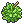
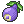
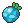
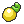
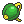

Beeren
Alle 57 Beeren mit ihrer Wirkung, ihrem Geschmack für Pokériegel und den Orten, an denen ihre Bäume stehen.
| Beere | Wirkung | Geschmack | Beerenbäume | Außerdem |
|---|---|---|---|---|
| Item (Tragen) bewirkt Selbstheilung bei Paralyse. | scharf 10 | Route 31, Viola City, Route 104, Route 103 | 3 weitere Fundorte | |
| Item (Tragen) weckt schlafendes Pokémon im Kampf. | trocken 10 | Route 37, Route 42, Route 116, Route 121 | 3 weitere Fundorte | |
| Item (Tragen) bewirkt Selbstheilung bei Vergiftung. | süß 10 | Route 33, Azalea City, Route 104, Route 102, Route 112, Route 123, Route 120 | 9 weitere Fundorte | |
| Item (Tragen) bewirkt Selbstheilung bei Verbrennung. | bitter 10 | Route 38, Route 39, Route 112, Route 123, Route 121 | 1 weiterer Fundort | |
| Item (Tragen) bewirkt Selbstheilung bei Frost. | sauer 10 | Route 44, Route 45, Route 121, Route 120 | 1 weiterer Fundort | |
| Item (Tragen) füllt AP im Kampf um 10 Punkte auf. | scharf 10, süß 10, bitter 10, sauer 10 | Route 43, Route 104, Route 103, Route 119, Route 123 | 2 weitere Fundorte | |
| Item (Tragen) füllt KP im Kampf um 10 Punkte auf. | scharf 10, trocken 10, süß 10, bitter 10, sauer 10 | Route 29, Route 30, Route 104, Route 102, Route 111 | 3 weitere Fundorte | |
| Item (Tragen) bewirkt Selbstheilung bei Verwirrung. | scharf 10, trocken 10, süß 10, bitter 10, sauer 10 | Route 36, Route 35, Route 114, Route 121 | 2 weitere Fundorte | |
| Item (Tragen) bewirkt Selbstheilung bei Statusproblem. | scharf 10, trocken 10, süß 10, bitter 10, sauer 10 | Fuchsania City, Route 46 | 3 weitere Fundorte | |
| Item (Tragen) füllt KP im Kampf um 30 Punkte auf. | scharf 10, trocken 10, süß 10, bitter 10, sauer 10 | Route 1, Route 26, Route 47, Route 118, Route 119, Route 123 | 3 weitere Fundorte | |
| Item (Tragen) füllt KP auf, bewirkt evtl. Verwirrung. | scharf 10 | — | 1 weiterer Fundort | |
| Item (Tragen) füllt KP auf, bewirkt evtl. Verwirrung. | sauer 10 | — | 1 weiterer Fundort | |
| Säe Pokériegel-Zutat in Lehmboden, damit Himmih wächst. | scharf 10, trocken 10 | Route 111, Route 120 | 2 weitere Fundorte | |
| Säe Pokériegel-Zutat in Lehmboden, damit Morb wächst. | trocken 10, süß 10 | Route 115 | 1 weiterer Fundort | |
| Säe Pokériegel-Zutat in Lehmboden, damit Nanab wächst. | süß 10, bitter 10 | Route 110, Route 121, Route 120 | 1 weiterer Fundort | |
| Säe Pokériegel-Zutat in Lehmboden, damit Nirbe wächst. | bitter 10, sauer 10 | Route 117, Route 120 | 1 weiterer Fundort | |
| Säe Pokériegel-Zutat in Lehmboden, damit Sanana wächst. | scharf 10, sauer 10 | Route 116, Route 120 | 1 weiterer Fundort | |
| Macht freundlicher, senkt KP-Basiswert. | scharf 10, süß 10, bitter 10 | Marmoria City, Route 3, Route 119, Route 123 | — | |
| Macht freundlicher, senkt Angr.-Basiswert. | trocken 10, bitter 10, sauer 10 | Route 24, Route 25, Route 115 | — | |
| Macht freundlicher, senkt Vert.-Basiswert. | scharf 10, süß 10, sauer 10 | Route 13, Fuchsania City, Route 123 | — | |
| Macht freundlicher, senkt Sp. Angr.-Basiswert. | scharf 10, trocken 10, bitter 10 | Prismania City, Route 16, Route 119 | — | |
| Macht freundlicher, senkt Sp. Vert.-Basiswert. | trocken 10, süß 10, sauer 10 | Route 6, Route 11, Route 123 | — | |
| Macht freundlicher, senkt Init.-Basiswert. | scharf 20, trocken 10 | Route 4, Route 8, Route 7 | — | |
| Säe Pokériegel-Zutat in Lehmboden, damit Kiwan wächst. | scharf 40, trocken 10 | — | 1 weiterer Fundort | |
| Säe Pokériegel-Zutat in Lehmboden, damit Pallm wächst. | trocken 40, süß 10 | — | 1 weiterer Fundort | |
| Säe Pokériegel-Zutat in Lehmboden, damit Wasmel wächst. | süß 40, bitter 10 | — | 1 weiterer Fundort | |
 Durinbeere | Säe Pokériegel-Zutat in Lehmboden, damit Durin wächst. | bitter 40, sauer 10 | — | 1 weiterer Fundort |
 Myrtilbeere | Säe Pokériegel-Zutat in Lehmboden, damit Myrtil wächst. | scharf 10, sauer 40 | — | 1 weiterer Fundort |
| Item (Tragen) schwächt eine Normal-Attacke. | trocken 25, süß 10 | — | 1 weiterer Fundort | |
| Item (Tragen) mildert sehr effektive Feuer-Attacke. | scharf 15, süß 10 | — | 1 weiterer Fundort | |
| Item (Tragen) mildert sehr effektive Wasser-Attacke. | trocken 15, bitter 10 | — | 1 weiterer Fundort | |
| Item (Tragen) mildert sehr effektive Elektro-Attacke. | süß 15, sauer 10 | — | 1 weiterer Fundort | |
| Item (Tragen) mildert sehr effektive Pflanzen-Attacke. | scharf 10, bitter 15 | — | 1 weiterer Fundort | |
 Kiroyabeere | Item (Tragen) mildert sehr effektive Eis-Attacke. | trocken 10, sauer 15 | — | 1 weiterer Fundort |
| Item (Tragen) mildert sehr effektive Kampf-Attacke. | scharf 15, bitter 10 | — | 1 weiterer Fundort | |
| Item (Tragen) mildert sehr effektive Gift-Attacke. | trocken 15, sauer 10 | — | 1 weiterer Fundort | |
 Schukebeere | Item (Tragen) mildert sehr effektive Boden-Attacke. | scharf 10, süß 15 | — | 1 weiterer Fundort |
| Item (Tragen) mildert sehr effektive Flug-Attacke. | trocken 10, bitter 15 | — | 1 weiterer Fundort | |
| Item (Tragen) mildert sehr effektive Psycho-Attacke. | süß 10, sauer 15 | — | 1 weiterer Fundort | |
 Tanigabeere | Item (Tragen) mildert sehr effektive Käfer-Attacke. | scharf 20, sauer 10 | — | 1 weiterer Fundort |
| Item (Tragen) mildert sehr effektive Gestein-Attacke. | scharf 10, trocken 20 | — | 1 weiterer Fundort | |
| Item (Tragen) mildert sehr effektive Geist-Attacke. | trocken 10, süß 20 | — | 1 weiterer Fundort | |
| Item (Tragen) mildert sehr effektive Drachen-Attacke. | süß 10, bitter 20 | — | 1 weiterer Fundort | |
| Item (Tragen) mildert sehr effektive Unlicht-Attacke. | bitter 10, sauer 20 | — | 1 weiterer Fundort | |
| Item (Tragen) mildert sehr effektive Stahl-Attacke. | scharf 25, trocken 10 | — | 1 weiterer Fundort | |
| Item (Tragen) mildert sehr effektive Fee-Attacke. | süß 25, bitter 10 | — | 1 weiterer Fundort | |
| Item (Tragen) hebt Angr.-Wert in einer Notlage. | scharf 40, süß 40, sauer 10 | Route 130 | — | |
| Item (Tragen) hebt Volltrefferquote in einer Notlage. | scharf 10, trocken 10, süß 10, bitter 10, sauer 10 | — | 1 weiterer Fundort | |
| Item (Tragen) hebt einen Statuswert in einer Notlage. | scharf 10, trocken 10, süß 10, bitter 10, sauer 10 | — | 1 weiterer Fundort | |
| Item (Tragen) heilt bei sehr effektiver Attacke. | scharf 40, trocken 10 | — | 1 weiterer Fundort | |
| Item (Tragen) hebt Genauigkeit in einer Notlage. | trocken 40, süß 10 | — | 1 weiterer Fundort | |
| Item (Tragen) erlaubt Erstschlag in Notlage. | süß 40, bitter 10 | — | 1 weiterer Fundort | |
| Item (Tragen) schadet dem Gegner bei phys. Attacke. | bitter 40, sauer 10 | — | 1 weiterer Fundort | |
| Item (Tragen) schadet dem Gegner bei Spezial-Attacke. | scharf 10, sauer 40 | — | 1 weiterer Fundort | |
| Item (Tragen) hebt Vert. bei phys. Attacke. | scharf 30, trocken 30, süß 10, bitter 10, sauer 10 | — | 1 weiterer Fundort | |
| Item (Tragen) hebt Sp. Vert. bei Spezial-Attacke. | scharf 10, trocken 10, süß 30, bitter 30, sauer 10 | — | 1 weiterer Fundort | |
| Säe Pokériegel-Zutat in Lehmboden, damit ein Rätsel wächst. | scharf 40, trocken 40, süß 40, bitter 40, sauer 40 | — | 1 weiterer Fundort |